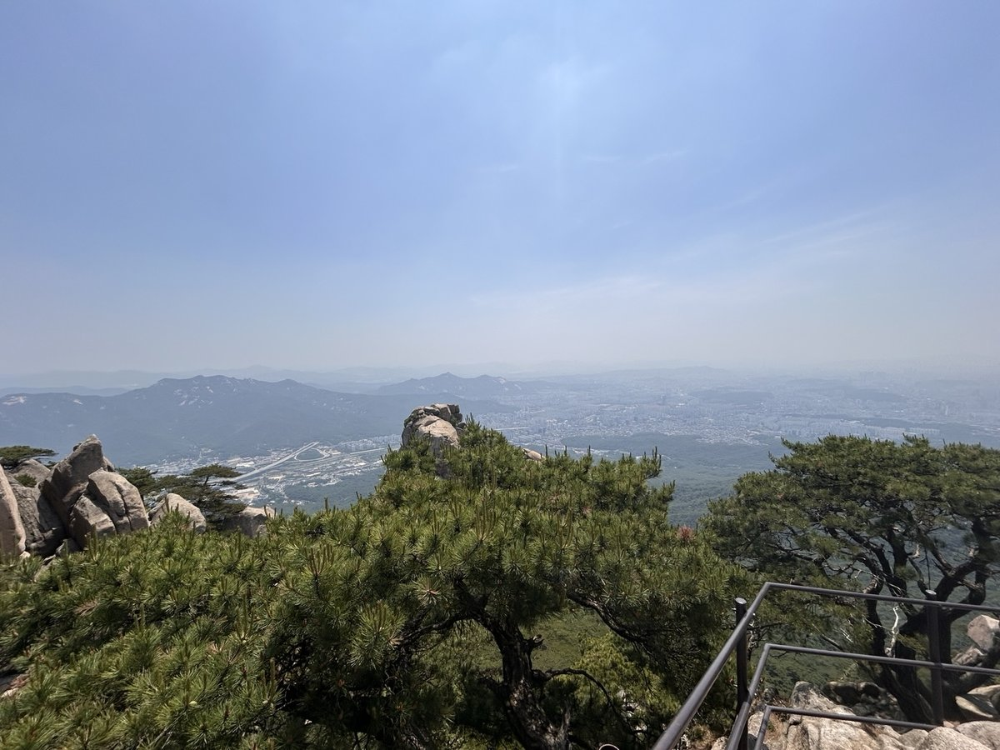
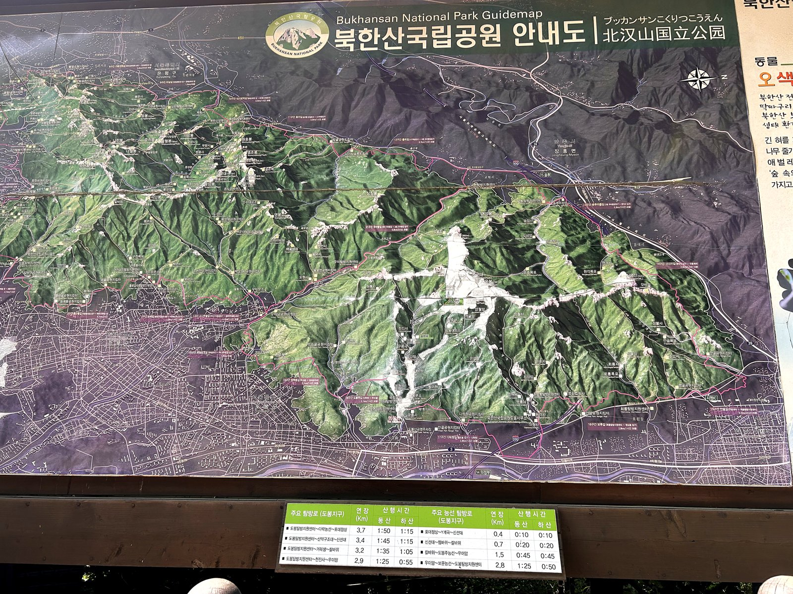
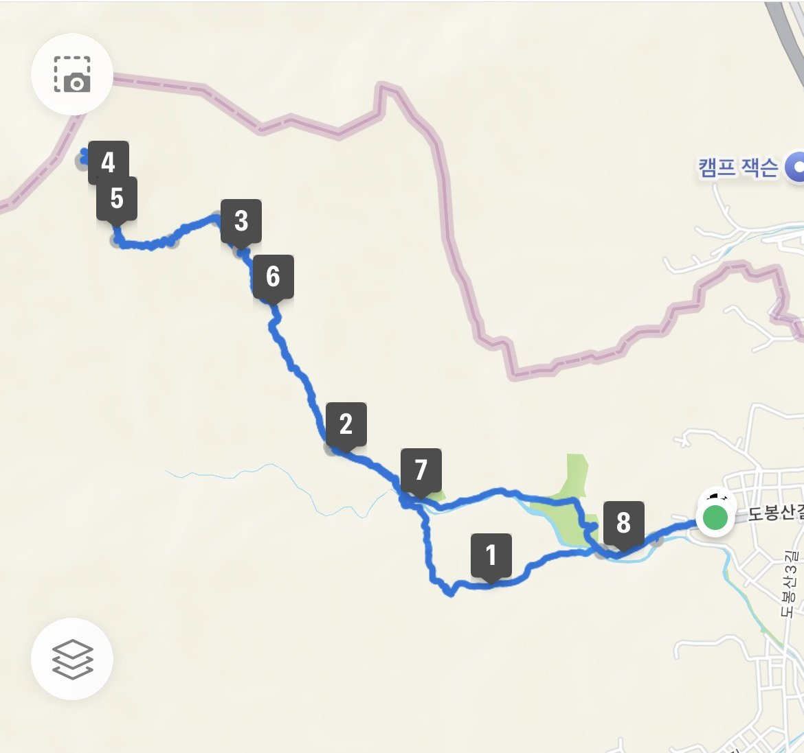
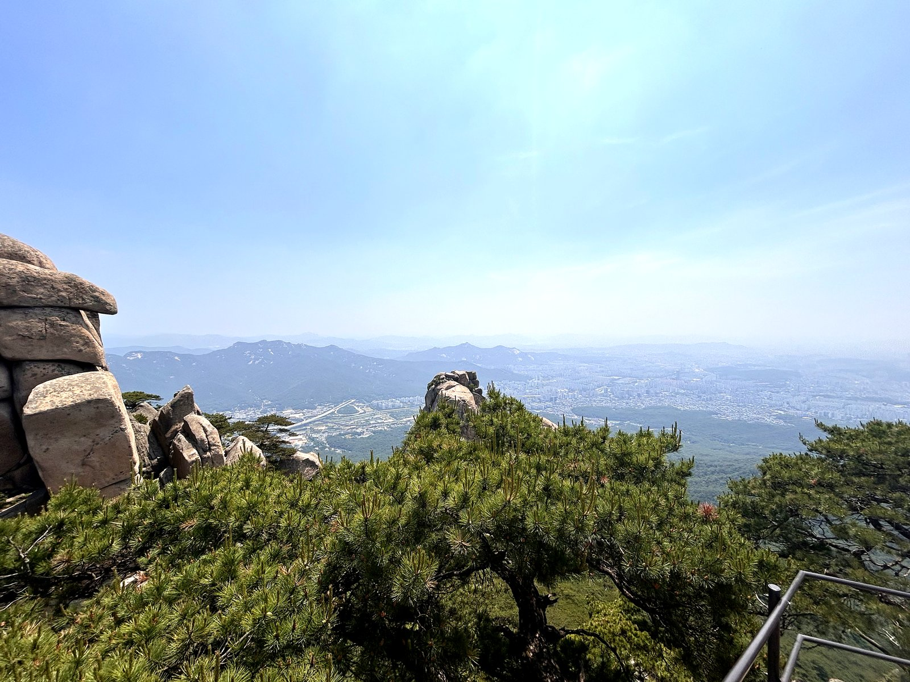
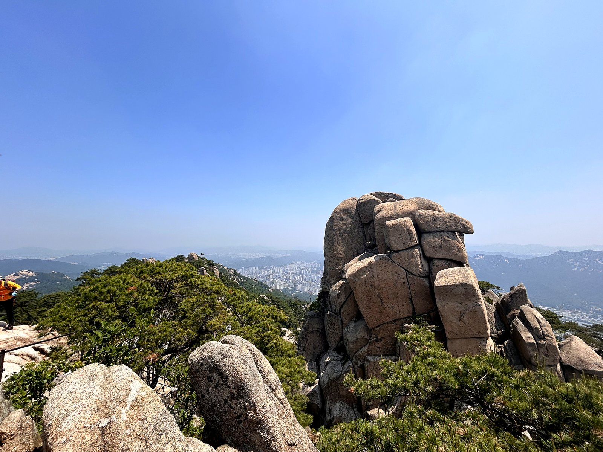
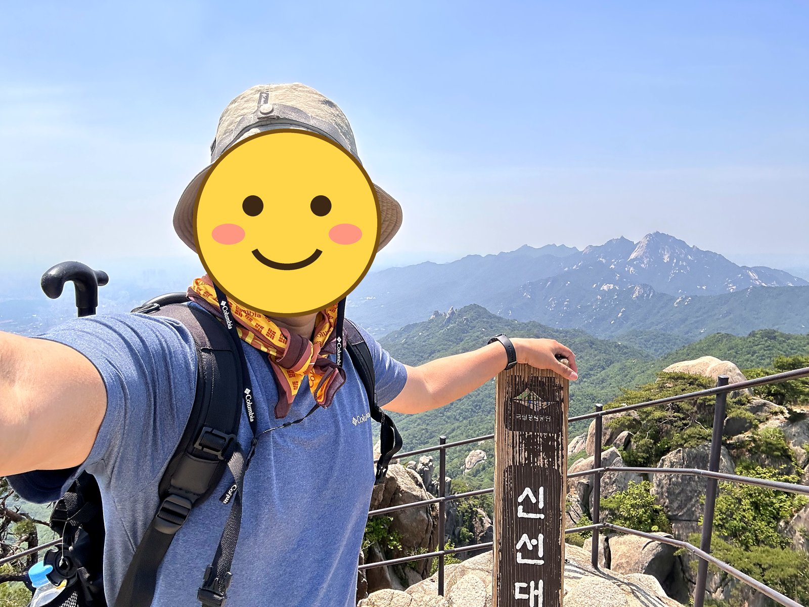

도봉산은 북한산국립공원의 북쪽 구역으로, 서울에서 가장 극적인 암벽 풍경을 가진 산입니다. 선인봉·만장봉·자운봉이 나란히 선 모습은 도봉산의 상징입니다.
다만 최고봉인 자운봉은 암벽 등반 구역이라 일반 등산객은 오를 수 없습니다. 실제로 밟는 정상은 바로 옆 신선대(약 726m)입니다.
도봉탐방지원센터에서 신선대까지는 3.3km, 2시간 내외입니다. 암벽을 가장 가까이 보고 싶다면 원도봉에서 다락능선을 타고 포대정상을 거쳐 신선대로 붙는 코스를 권합니다. 중간의 Y계곡은 난도가 높아 우회로가 따로 있습니다.
등반기록
도봉탐방지원센터 → 도봉사 → 금강암 → 마당바위 → 신선대 → 마당바위 → 금강암 → 도봉서원 → 도봉탐방지원센터
갑자기 산이 생각나서
갑자기 산이 생각나 하루 월차를 내고 찾아간 도봉산, 이게 100대 명산 도전의 시작이 될지는 그때는 몰랐는데, 뭐에 씌운 것 같이 시작된 도봉산행.
산행코스 : 도봉탐방지원센터 → 도봉사 → 금강암 → 마당바위 → 신선대 → 마당바위 → 금강암 → 도봉서원 → 도봉탐방지원센터 도착.
화창한 날씨에 출발한 산행, 오랜만에 오르는 산, 숨이 턱까지 차고, 땀이 너무 많이 난다. 정신없이 올라 어떻게 올랐는지 기억이 잘 안 남. 사진도 찍지 못할 정도로 힘들었음.


신선대 정상



이 산의 포인트
- 선인봉·만장봉·자운봉의 수직 암벽
- 일반 등산객이 오르는 정상은 신선대
- 다락능선 — 암벽을 가장 가까이서 보는 코스
- Y계곡 구간은 난도가 높아 우회로 이용 권장
등산 코스
| 코스 | 거리 | 소요 | 난이도 |
|---|---|---|---|
| 도봉탐방지원센터 → 신선대 도봉탐방지원센터 → 도봉서원 → 도봉대피소 → 석굴암 → 신선대 |
약 3.3km(편도) | 1시간 40분~2시간 30분 | 중 |
| 다락능선 코스 원도봉탐방지원센터 → 심원사 → 다락능선 → 포대정상 → (Y계곡 또는 우회) → 신선대 |
약 4km(편도) | 2시간 30분 내외 | 상 |
| 북한산 연계 종주 도봉산 신선대 → 우이암 → 우이령 방면 |
약 10km 이상 | 6시간 이상 | 상 |
| 도봉탐방지원센터 원점회귀 (마당바위 → 신선대) 🥾 나의 기록 도봉탐방지원센터 → 도봉사 → 금강암 → 마당바위 → 신선대 → 마당바위 → 금강암 → 도봉서원 → 도봉탐방지원센터 |
약 8.7km | 4시간 50분 내외(휴식 포함) | 중 |
인증장소
신선대에서 인증합니다. 최고봉인 자운봉은 암벽 구간이라 일반 등산로로는 오를 수 없습니다.
가는 길
- 자가용
- 주차 공간이 부족해 대중교통을 권합니다.
- 대중교통
- 1호선·7호선 도봉산역에서 도보로 접근합니다. 원도봉 방면은 망월사역을 이용합니다.
주차장
- 도봉산 공영주차장서울 도봉구 도봉동
주말 오전이면 대부분 만차입니다. 1호선·7호선 도봉산역이 바로 앞이라 대중교통이 훨씬 낫습니다.
- 송추 공영주차장경기 양주시 장흥면 울대리
송추폭포·오봉 방면 들머리입니다.
주차 요금과 면수는 자주 바뀌고 성수기에는 임시 주차장·셔틀이 운영되기도 합니다. 출발 전에 지도 앱이나 공원 사무소로 한 번 더 확인하세요.
맛집
도봉산 입구는 오래된 등산 상권이라 능이오리백숙과 두부보쌈, 파전 집이 줄지어 있습니다. 향토음식이라기보다 하산주 문화에 맞춰 자리 잡은 차림입니다.
- 미림산장들머리에서 3.0km서울특별시 강북구 삼양로181길 253 (우이동)
- 도봉산양고기들머리에서 2.5km서울특별시 도봉구 도봉로191길 99-6 (도봉동)
- 무수아취들머리에서 3.0km서울특별시 도봉구 도봉로169길 249 (도봉동)
- 왕의장어들머리에서 3.4km서울특별시 강북구 삼양로181길 141-5 (우이동)
- 무수옥들머리에서 3.5km서울특별시 도봉구 도봉로165길 15
한국관광공사에 등록된 음식점입니다. 맛집 순위가 아니며, 영업시간과 휴무일은 바뀔 수 있으니 먼 길이라면 미리 전화해 보세요.
언제 가면 좋은가
봄가을이 가장 좋습니다. 겨울 결빙기에는 신선대 직전 바위 구간이 위험하고, 여름에는 암반 반사열에 유의해야 합니다.
알아두면 좋은 것
- 신선대 직전 구간은 쇠난간을 잡고 올라야 하니 장갑을 챙기세요.
- Y계곡은 일방통행으로 운영되는 때가 있고 난도가 높습니다. 자신 없으면 우회하세요.
- 북한산과는 같은 국립공원이지만 100대 명산 목록에서는 별개 항목입니다.